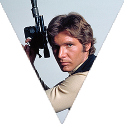
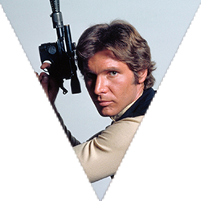

"Luke, Je suis ton père"
Star Wars, Episode III-IV-V-VI
Dark
vador
La vie de Dark Vador commence là où celle d'Anakin Skywalker se termine. Anakin Skywalker/Dark Vador est le seul personnage vivant présent physiquement dans les six épisodes sortis à ce jour. Sa rédemption finale lui permettant d'accomplir sa destinée, ramener l'équilibre dans la Force et éliminer les Sith, et le fait qu'il soit le père des jumeaux Luke Skywalker et Leia Organa constituent l'intrigue principale de la série imaginée par George Lucas. Anakin Skywalker/Dark Vador est le seul personnage vivant présent physiquement dans les six épisodes sortis à ce jour.
Espèce
Sexe
Planète d'Origine
Fonction
Humain
Mâle
Tatooine
Maitre Sith
Affiliations
Apparitions
SithsEmpire
Episode III - IV - V - VI
Dark Sidious Maitre
Han Solo Contrebandier
 

Jabba le Hutt Brigand
Padme Amidala Femme defunte